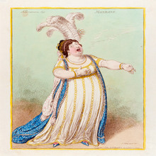

Εισαγωγή στην θεωρία της μουσικής
Διάρκεια = 4 εβδομάδες | Κόστος = 130$

Έχετε πάθος για τη μουσική και θέλετε να μάθετε περισσότερα για το πώς λειτουργεί; Είστε μουσικός που μάθατε μέσω του αυτιού και δεν έχετε επίσημη εκπαίδευση; Θα θέλατε
να σπουδάσετε μουσική αλλά δεν είστε σίγουροι από πού να ξεκινήσετε; Τότε αυτό το μάθημα θεωρίας της μουσικής είναι για εσάς. Αυτό το μάθημα περιλαμβάνει έξι μαθήματα
που θα σας δώσουν τις γνώσεις και τις δεξιότητες που χρειάζεστε για να κατανοήσετε τη βασική θεωρία της μουσικής.Πάνω απ 'όλα, το μάθημα έχει σχεδιαστεί για να μεταδίδει
τη χαρά της δημιουργίας μουσικής και της κοινής χρήσης της με άλλους
Τι θα μάθεις στο συγκεκριμένο μάθημα.
-
Πώς να αναγνωρίζετε, να αναλύετε και να τραγουδάτε διαστήματα
-
Πώς να αναγνωρίσετε το τονικό κέντρο ενός τραγουδιού
-
Πώς να φτιάξετε βασικές κύριες, μινόρε και κυρίαρχες έβδομες συγχορδίες
Link για τα μαθήματα!
Όπερα του 18ου αιώνα: Handel & Mozart
Διάρκεια = 5 εβδομάδες | Κόστος = ΔΩΡΕΑΝ

Σε αυτό το μάθημα που κόβει την ανάσα, θα γνωρίσετε τη μουσική δύο όμορφων όπερων — τόσο με τη μαγευτική τέχνη όσο και με τις πολύχρωμες ιστορίες τους. Αρχικά, θα
ταξιδέψετε στο Λονδίνο το 1724, όπου ο George Frideric Handel έκανε πρεμιέρα την πιο διάσημη όπερά του, Giulio Cesare. Γνωρίστε τους ερμηνευτές και ζήστε πώς ήταν να
παρακολουθείτε την πρώτη παραγωγή, ενώ ταυτόχρονα κερδίζετε μια εκτίμηση για τα τυπικά χαρακτηριστικά της ιταλικής όπερας που εκπροσωπούνται σε αυτή τη δημοφιλή σειρά
μπαρόκ όπερας. προχωρώντας, 63 χρόνια στο Estates Theatre στην Πράγα για την πρεμιέρα του διαρκούς κλασικού έργου του Wolfgang Amadeus Mozart, Don Giovanni. Μάθετε για
τις προκλήσεις που αντιμετώπισε ο Μότσαρτ κατά τη διάρκεια της διαδικασίας των προβών και την επαναστατική σχέση που δημιούργησε μεταξύ μουσικής και δράματος σε αυτήν
την όπερα.
Τι θα μάθεις στο συγκεκριμένο μάθημα.
-
Πώς αλληλεπιδρούν τραγουδιστές και ορχήστρα
-
Πώς έχουν αλλάξει οι παραστάσεις αυτών των έργων από την πρεμιέρα τους
-
Οι βασικές δομές της μπαρόκ όπερας
-
Οι τεχνικές του Μότσαρτ για την αναπαράσταση χαρακτήρων μέσω της μουσικής
Link για τα μαθήματα!
Όπερα του 19ου αιώνα: Meyerbeer, Wagner και Verdi
Διάρκεια = 6 εβδομάδες | Κόστος = 200$

Ταξιδέψτε στην κεντρική Ευρώπη το 1800 για να ζήσετε τις πρεμιέρες των Les Huguenots του Meyerbeer, Das Rheingold του Wagner και Otello του Verdi. Ως συμπλήρωμα της
πορείας μας για την όπερα του 18ου αιώνα, θα μυηθείτε στην όπερα μέσω μιας εις βάθος μελέτης αυτών των κανονικών έργων. Θα μάθετε για τις μουσικές λεπτομέρειες κάθε
όπερας και την πολιτιστική επιρροή των έργων κατανοώντας τις συνθήκες της σύνθεσής της, την παράσταση της πρεμιέρας και την κληρονομιά και τη σημασία της σήμερα.
Πρώτα, μπείτε στην Όπερα του Παρισιού το 1836 για την πρεμιέρα της μεγάλης όπερας Les Huguenots του Giacomo Meyerbeer. Πηγαίνετε στα παρασκήνια για να ανακαλύψετε τους
ανθρώπους και την τεχνολογία που έκαναν αυτό το είδος όπερας έναν τόσο συναρπαστικό συνδυασμό μουσικής και θεάματος, σημαντικό στην εποχή του αλλά ελάχιστα γνωστό σήμερα.
Στη συνέχεια, Ταξιδέψτε στο Μπαϊρόιτ το 1876 για την πρώτη παραγωγή του Das Rheingold του Richard Wagner, την εναρκτήρια όπερα της τετράμερης έπος του Der Ring des
Nibelungen.Τέλος, ταξιδέψτε στο Μιλάνο το 1887 για την πρεμιέρα της τελευταίας όπερας του Τζουζέπε Βέρντι, Otello.
Τι θα μάθεις στο συγκεκριμένο μάθημα.
-
Τις τεχνολογίες πίσω από τις γαλλικές παραστάσεις όπερας του 1830
-
Πώς διέφερε ο ρομαντισμός από την αισιοδοξία του Διαφωτισμού
-
Τα διαφορετικά στυλ τραγουδιού στη γαλλική Grand Opera
-
Πώς η προσέγγιση του Βάγκνερ στην όπερα επηρέασε τον Οτέλο του Βέρντι
Link για τα μαθήματα!
Μουσική για Ευεξία
Διάρκεια = 4 εβδομάδες | Κόστος = 50$

Ακούς μουσική όλη την ώρα. Ίσως τραγουδάτε, παίζετε ένα όργανο ή συνθέτετε μουσική. Δεν χρειάζεται να έχετε μουσικό ταλέντο για να χρησιμοποιήσετε τη μουσική για να
βελτιώσετε την ευημερία σας, ακόμα και την υγεία σας. Μάθετε απλές τεχνικές για να εμπλουτίσετε το μυαλό, το σώμα και το πνεύμα σας μέσω της μουσικής. Οι μέθοδοι μπορούν
να εφαρμοστούν στην καθημερινή σας ζωή, ιδιαίτερα όταν αισθάνεστε πεσμένοι ή αγχωμένοι. Αναπτύχθηκε από έναν πιστοποιημένο μουσικοθεραπευτή και έναν
τραγουδιστή/πιανίστα/συνθέτη/καλλιτέχνη ηχογράφησης που ειδικεύεται στην ινδική μουσική, αυτές οι στρατηγικές συνδυάζουν την επιστήμη με τη σοφία της ανατολικής
φιλοσοφίας. Στο μάθημα, ανακαλύψτε πώς να ξεκλειδώσετε τη δημιουργικότητά σας. Θα μάθετε όχι μόνο πώς να ακούτε μουσική με έναν νέο τρόπο, αλλά και πώς να ακούτε τον
αντίκτυπο που έχει η μουσική σε εσάς. Θα μάθετε πώς να φροντίζετε τον εαυτό σας εξασκώντας τεχνικές αντιμετώπισης που υποστηρίζονται από μουσική που είναι ειδική για εσάς.
Τι θα μάθεις στο συγκεκριμένο μάθημα.
-
Τα αποτελέσματα της μουσικής στο σώμα και στον εγκέφαλο
-
Στρατηγικές και τεχνικές για τη ρύθμιση των συναισθημάτων και του στρες με την ενσωμάτωση της μουσικής με αρχαίες πρακτικές όπως το μάντρα και η πραναγιάμα
-
Πώς και γιατί η μουσική μπορεί να σας βοηθήσει να ζήσετε μια πιο ευτυχισμένη, πιο υγιή ζωή
Link για τα μαθήματα!